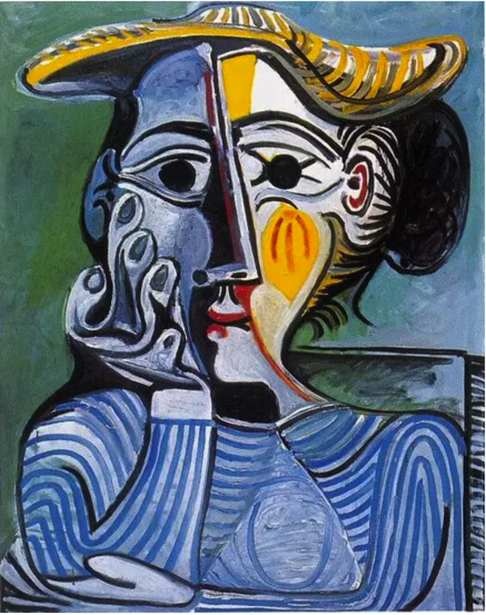

What are embeddings?
If you go to the Museu Picasso in Barcelona, you will see many of the artist's early works. They don't look like what we think of as Picasso's style, at all. These paintings, completed during his early years, are displays of his technical genius - as a classical painter.
Some particularly prominent examples are "Science and Charity" and "First Communion". One of my favorites is "Portrait of the Artist's Mother," from 1896, when he was fifteen. You can see both the artist's innate ability to make art, and his immense potential future.
To get to the point where he could reject traditional styles, he had to first learn and master them.

This is also true for machine learning. There's a whole universe of exciting developments at the forefront of large language models. But in the noise of the bleeding edge, a lot of important things, including the foundational concepts. If we don't understand the fundamentals of how we get from a single word to a BERT representation, and more importantly, why we do so, the models will remain black boxes to us, and we will not be able to build on them and master them in the ways that we want.
Peter Norvig urges us to teach ourselves programming in ten years. In this spirit, after several years of working with embeddings, foundational data structures in deep learning models, I realized I didn't truly have a good conceptual model of them. Moreover, when I went to learn more, there was no good, general text I could refer to as a starting point. I decided to dive into a long project to truly understand embeddings, and, in the process, understand the fundamental building blocks of machine learning and natural language processing, particularly as they relate to recommendation systems today. The results of this project are the PDF on this site, and the start of the Viberary project.
Picasso also left us with the quote,
When art critics get together they talk about Form and Structure and Meaning. When artists get together they talk about where you can buy cheap turpentine.
I wrote this text mostly for my own learning process, and so it reflects my own curiosity and questions about implementation, but it's my hope that this document is not only an introduction to the theory around embeddings, but also places them fully in living, breathing business and engineering context so that engineers, PMs, students, and anyone looking to learn more about fundamentals finds it useful.
Machine learning, like all good engineering and like good art, is ultimately, a way for us to express ourselves, a craft made up of fundamental building blocks and patterns that empower us and allow us to build something beautiful on strong foundations of those that came before us. and I hope you find as much joy in exploring embeddings and using them as I did.
Audience
Anyone who needs to understand embeddings, from machine learning engineers, to SWE, product or project manager, student, or simply curious. That said, there are different levels of understanding in the document. Here are my recommendations on how to read:
| # | You want | Sections | Prereqs |
|---|---|---|---|
| 1 | a high level intro | Sections 1,2 | How a website works,tech jargon |
| 2 | Embeddings as an engineering problem | 1,2,5 | Engineering background,some Python, tech jargon |
| 3 | Deep Internals | 3,4 | Linear Algebra, ML, Python |
Licence
"What are embeddings" is licensed under a Creative Commons Attribution-ShareAlike 3.0. This means that you are welcome to use, download and share the text, provided that attribution is given to the author (Vicki Boykis) and that it is released under the same licence.
Feedback
Feedback on the clarity of concepts or just typos is welcome. Feel free to submit a PR or email me.